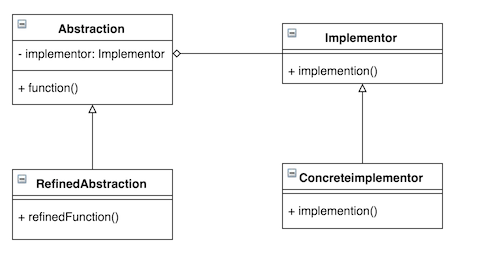

Bridge Pattern by Juicyroach
Posted on Apr 10, 2016 at 04:00 PM

● 目地 : 將抽象物件(abstract 要用的privte物件)與行為(subclass的method)分開
● 使用時機 : 當我們有一個具有多個具體實現(concrete subclass)都繼承相同的抽象類別，且這些具體實現有部份中含有相同的概念(用到差不多的邏輯或差不多的物件)
● 想法 : 在抽象物件那層加入一個類似strategy的物件，讓相同的邏輯或概念抽成class level，讓他能隨時抽換
● UML :
● 程式與解說 :
假設咖啡有大杯與小杯都繼承Coffee類別，對於要不要加料這件事情可以抽成一個Coffee的一個行為類別，方便做抽換
首先要先做出加料的行為類別
public interface CoffeeToping {
public String addToping();
}
public class MilkToping implements CoffeeToping {
@Override
public String addToping() {
// System.out.println("Add milk");
return "Add milk";
}
}
public class NoToping implements CoffeeToping {
@Override
public String addToping() {
// System.out.println("Do not add toping");
return "Add notiong";
}
}
接著撰寫主要的Model，也就是咖啡的物件
public abstract class Coffee {
private CoffeeToping toping;
public Coffee(CoffeeToping toping) {
this.toping = toping;
}
public CoffeeToping getToping() {
return toping;
}
public abstract void getCoffee();
}
public class SmallCoffee extends Coffee {
public SmallCoffee(CoffeeToping toping) {
super(toping);
}
@Override
public void getCoffee() {
System.out.println("Small coffee with " + this.getToping().addToping());
}
}
public class LargeCoffee extends Coffee {
public LargeCoffee(CoffeeToping toping) {
super(toping);
}
@Override
public void getCoffee() {
System.out.println("Large coffee with " + this.getToping().addToping());
}
}
最後Client來對咖啡物件做操作，因為我們把加料的動作拉成一個行為物件，因此是可以一個可以抽換的
public class Client {
public static void main(String[] args) {
Coffee smallCoffee=new SmallCoffee(new MilkToping());
Coffee largeCoffee=new LargeCoffee(new NoToping());
smallCoffee.getCoffee();
largeCoffee.getCoffee();
}
}
個人認為Bridge就是在常見的Model架構中加入了Strategy，讓所有特別的行為都獨立可抽換，也是以合成代替繼承的範例